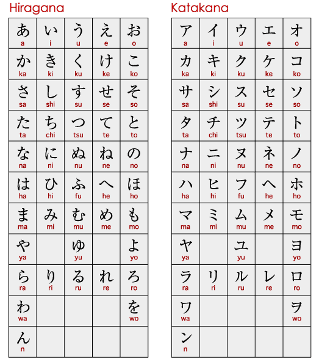
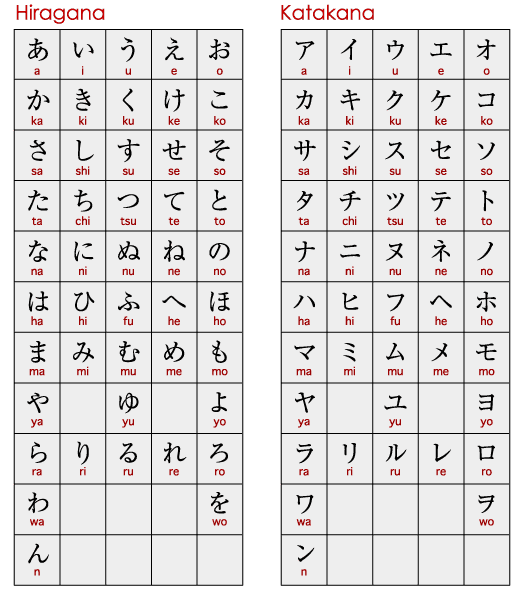

¿Qué es Japón?
Japón es un país insular que se localiza en el este asiático, entre el Océano Pacífico y el Mar del Japón. Si se observa un mapa, se lo puede divisar al este del territorio chino, Rusia y la península de Corea. Japón comprende más de 3.000 islas y tiene la décima población más numerosa del planeta ya que está compuesta por alrededor de 127 millones de individuos.
Tokio, la capital del mencionado país, está señalada como la porción urbana más amplia del mundo en materia de población ya que ésta supera los 30 millones de habitantes. El vocablo Japón tiene su origen en el término Nippon, cuya traducción en español de manera literal es «el origen del sol». Por eso, la denominación oficial y original de la nación japonesa es Nippon-koku, es decir, «el país del origen del sol».
Tokio, la capital del mencionado país, está señalada como la porción urbana más amplia del mundo en materia de población ya que ésta supera los 30 millones de habitantes. El vocablo Japón tiene su origen en el término Nippon, cuya traducción en español de manera literal es «el origen del sol». Por eso, la denominación oficial y original de la nación japonesa es Nippon-koku, es decir, «el país del origen del sol».
 
